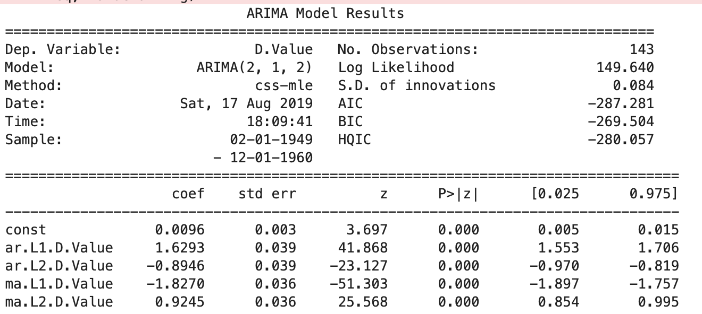
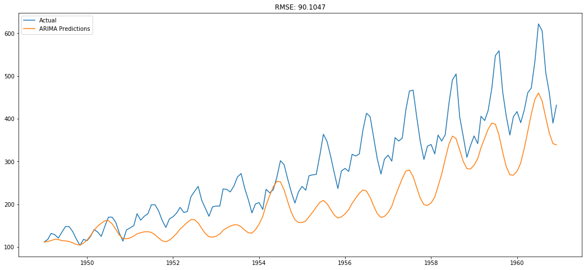
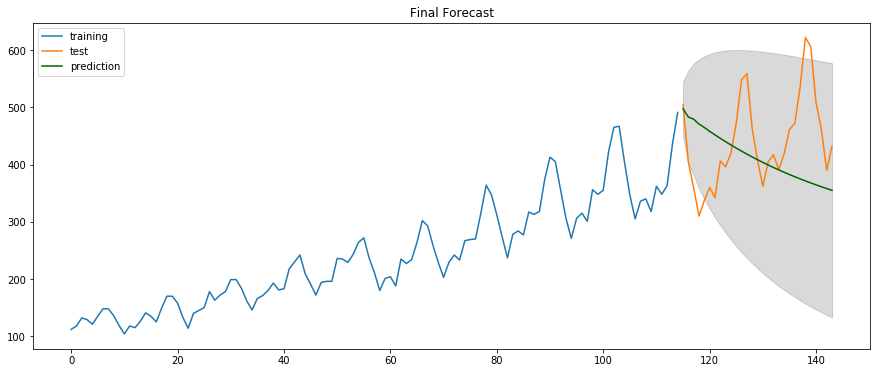
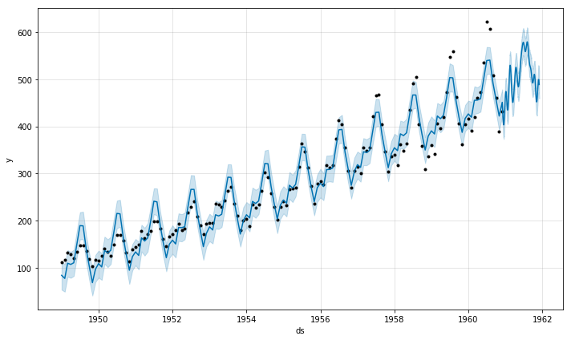
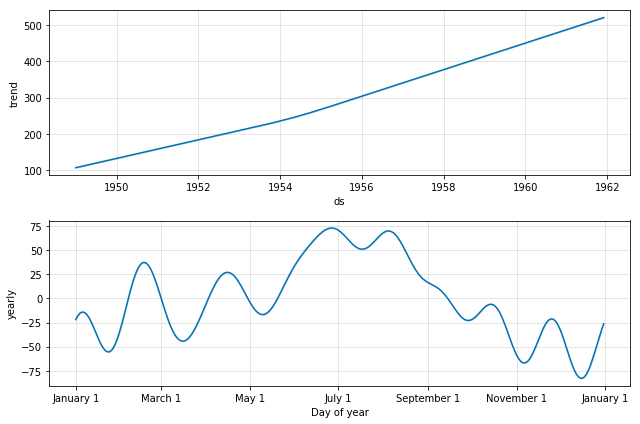
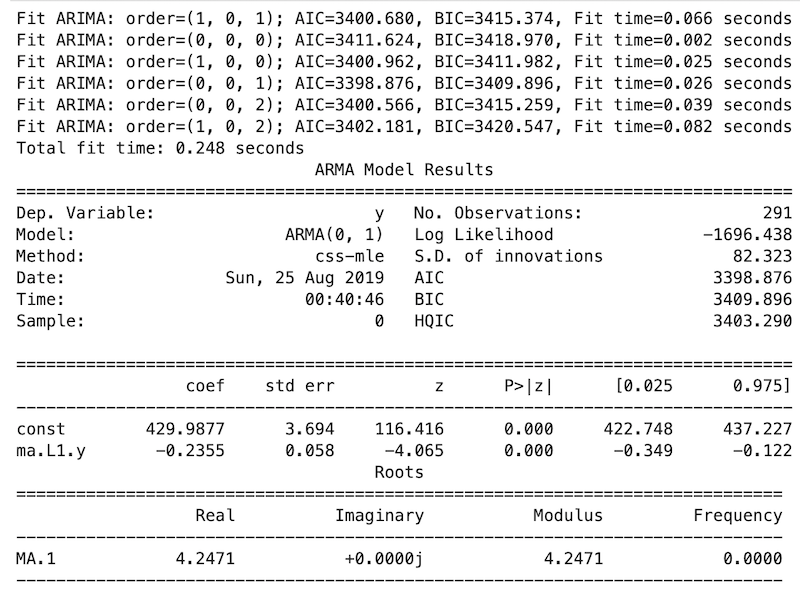
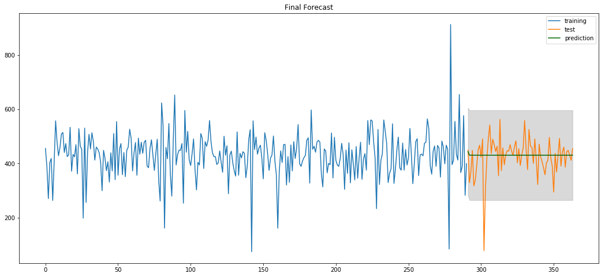
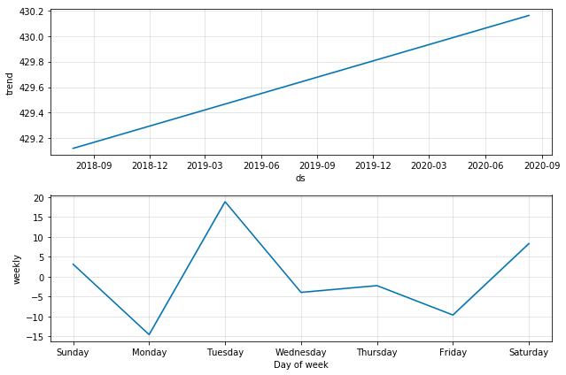
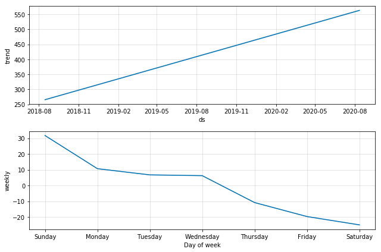
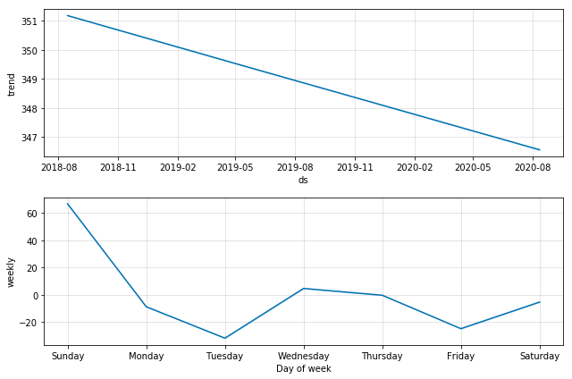

A Self Across Time
Mark Koester
PYCON MALAYSIA, August 25, 2019
A Self Across Time
Time Series Data Analysis
with Python
Mark Koester | www.markwk.com
PYCON MALAYSIA, August 24, 2019
Slides and Code: github.com/markwk/ts4health
Slides and Code:
github.com/markwk/ts4health
Key Terms
Time Series
A time series is a sequence of observations taken sequentially in time.
George Box and Gwilym Jenkins, Time Series Analysis (2015, orig 1970)
Time Series Data Analysis
The objective of time series analysis is to decompose a time series into its constituent characteristics and develop a mathematical model for each.
Pal, D. A., & Prakash, D. P. K. S. (2017). Practical Time Series Analysis
Examples of Time Series Analysis
- Financial markets: stock prices and daily closing value of the Dow Jones Industrial Average.
- Natural Phenomenon: temperature trends, climate change, ocean tides, sunspots.
- Economics and Price fluctations: GDP, Job Market, supply and demand, i.e. buying and selling drugs.
- Health, Psychology and Behavioral Sciences: Drug or intervention analysis, investigation of natural, biological cycles
Example Time Series with Forecast Function

Source: Box, 2015.
Time Series Data Analysis
for Health and Self
- Health: N-of-1 trials in Medical Research and Practice, esp intervention studies.
- Self: Within-individual variability for Self-Trackers, Quantified Self and Biohackers.
Quantified Self (QS)
measuring or documenting something about your self to gain meaning or make improvements
Related: Self-tracking, Biohacking, Data-driven life…

Source: https://github.com/markwk/qs_mind_map
Our Question:
How to understand human health across time
or an individual self over a lifetime?
Who Am I?
Who Am I?
- deeply interesting in how both humans and technologies work
- part social scientist, part technologist
- software developer / builder: Int3c.com, github.com/markwk
- writer / thinker: www.markwk.com, DataDrivenYou.com
My Mission
to transform science and data into better self-understanding and empowered self-improvement
Current Work
Intersection of data technologies AND human health and optimization
- Doctors and companies to improve health and happiness
- Quantified Self and Biohackers
- Build data-driven tools with Machine Learning and AI (QS Ledger, PhotoStats.io)
A Self Across Time
Time Series Data Analysis
with Python
Talk Objectives
- a conceptual understanding of time series analysis
- starter code for visualizing, testing and modeling for time series effects
Talk Outline
- Time and Temporal Structures of Time Series Data
- Our Sample Dataset (Sleep and Exercise / Activity) and Practical Questions
- Time Series Visualization, EDA, and Processing
- Tests and Techniques for Time Series Data
- Modeling Time Series Data
- Time Series Data Analysis Applied to Health and Self
- Conclusions, Next Steps and Future Directions
REFERENCES and APPENDIX
Talk Note
Focus will be on univariate, linear, discrete time series
(instead of multivariate, nonlinear, or continuous)
and assume our data/process follows a stochastic model.
Time Series Data
and Temporal Structures
What is Time?

What is Time?
What, then, is time? If no one asks me, I know what it is. If I wish to explain it to him who asks, I do not know.
Saint Augustine (AD 354-430, The Confessions)
Timeless and the “Timed”
- Much of philosophy and the history of philosophy can be thought of in terms of questions regarding what is timeless and what is not.
Two Primary Characteristics of Time:
- time is unidirectional (arrow of time goes forward)
- time gives order to events
General Challenges of Modeling Time
- Physics of Time
- Our Experience, Conception and Consciousness of Time
- How do we link “models of time to people’s basic experiences”? (Frank, 1998).
Good News…

Good News…
Fortunately, we don’t need to deal with these general time problems as such, because we only need to deal with the time challenges in our data!
Data Science / ML Challenges with Time Series:
- How to understand the time component in a data set?
- How to isolate out time…
- …so we can stationalize…
- …model and forecast the data?
Time Index
Time Series (general definition)
- A time series is a sequence of measurements or observations that varies in time.
Time Index
Part of what happens in your data is because of the effects of time, time’s order, cycles, patterns, etc.
Time (Index) Can Create Non-Stationary Data
Examples of Stationary vs. Non-Stationary


Internal Structures of Temporal Data
(aka effects of the time index)
- trend (general direction of data)
- seasonality (weekly, monthly, seasons, etc.)
- cyclical movements (seasonality on a longer scale, often non-calendar)
- serial correlation (lag, meaning previous observation(s) affect current one)
- unexpected variations (noise, randomness)
Stationarity
(or stationary time series or stationary process)
- Stationarity means that the statistical properties of the process do not change over time.
Why is Stationary Data Important?
- Generating stationary data is important in order to understand, model, and forecast time series data.
- In healthcare and biology, we need to understand if an effect is part of a trend or caused by an intervention (or other factors).
Stationarizing Our TS Data
the transformation process of decomposing and detrending ts data so non-stationary becomes stationary.
Approaches
to Time Series Data
Box-Jenkins Method

A generic methodology of time series analysis

Source: Pal, 2017.
Our Sample Dataset and Questions
Our Sample Set
- Wearable Devices and individuals: Fitbit (2), Oura (1), Apple Watch (1)
- Target Data:
- Sleep
- Exercise / Activity Level, inc Steps
Our Focus: Within-Individual Variablity
Practical Questions
- Are there and what are the time patterns for sleep and activity levels?
- Can we model and forecast these variables?
FUTURE: Does sleep correlate or affect activity level? Or vis-versa?
Data Collection and Processing
- Data collection was done using a variation of QS Ledger, an open source Python project for collecting and visualization of self-tracking data (Fitbit, Apple Health, Oura, etc).
- Each data set was then processed and aggregated into a standardized format.
SEE: Previous Speech Python For Self-Trackers.
Example Raw Dataset

Source: Fitbit User 1
Example Data Set with Simple Moving Averages

Source: Fitbit User 2
Dataset General Characteristics
Time Series Visualization
Exploratory Data Analysis
TS Data Processing
Why do we use data visualization for initial time series analysis?
- check for trends, seasonality and cyclic patterns
Examples of Time Series Visualization
- Line Charts
- Histogram and Density Plots
- Box and Whisker Plots by Interval
- Heat Maps
- Time Series Lag Scatter Plots
Additional Methods of Exploratory Data Analysis
- Check for lag effects and scatterplot
- Moving Averages (i.e. rolling mean)
- Exponentially-weighted moving average (EWMA)
Missing Data?
Missing Data: Imputation
Z-Scores (standard score)
- Easy to calculate
- Good way to compare between measurements and between individuals when scales may vary (like mood, activity, steps, sleep, etc.)
Z-Scores: Comparing Individuals
:
Z-Scores: Comparing Two Metrics

Z-Scores: Outlier Detection
Statistical Tests
for Detecting Temporal Effects
Statistical Tests
- are used check for autocorrelation and if there are other time index effects.
- Examples: Autocorrelation Function (ACF), Partial Autocorrelation Function (PACF), Dickey-Fuller Test
Autocorrelation Function (ACF)
- ACF tells you the correlation between points separated by various time lags.
NOTE: The prefix “auto” refers to “self” (rather than automatic)
Four Sample Scenarios

Autocorrelation Plots (Classic Pattern)

Autocorrelation Plots (Health Example)

Partial Autocorrelation Function (PACF)
- shows you the relationship between an observation in a time series with observations at prior time steps but, unlike ACF, with the relationships of intervening observations removed.
CODE EXAMPLES:
Data_Visualization_Health_and_Self_Time_Series.ipynb
For background see, Time_Series_Data_Visualization_with_Python.ipynb
Code: Autocorrelation

Automated Dickey-Fuller Test
- The Augmented Dickey-Fuller is a test used to check a univariate process or dataset for the presence of serial correlation.
- The test statistic is expected to be negative. So if it is less than or more negative than the critical value we can conclude that the data is stationary.
Code: Automated Dickey-Fuller Test
from statsmodels.tsa.stattools import adfuller
#Perform Dickey-Fuller test:
print('Results of Dickey-Fuller Test:')
dftest = adfuller(timeseries, autolag='AIC')
dfoutput = pd.Series(dftest[0:4], index=['Test Statistic','p-value','#Lags Used','Number of Observations Used'])
for key,value in dftest[4].items():
dfoutput['Critical Value (%s)'%key] = value
print(dfoutput)Sample Scenario:

Results of Dickey-Fuller Test:
Test Statistic 0.815369
p-value 0.991880
#Lags Used 13.000000
Number of Observations Used 130.000000
Critical Value (1%) -3.481682
Critical Value (5%) -2.884042
Critical Value (10%) -2.578770What Does this Mean? This data is not stationary!
Is Our Health Data Stationary?
Autocorrelation

Apple Watch 01 Sleep
Autocorrelation

fitbit_02 Sleep
Partial Autocorrelation

fitbit_02 Sleep
Results of Dickey-Fuller Test:
Test Statistic -4.625906
p-value 0.000116
#Lags Used 6.000000
Number of Observations Used 357.000000
Critical Value (1%) -3.448801
Critical Value (5%) -2.869670
Critical Value (10%) -2.571101fitbit_02 steps without outlier tweaking
Results of Dickey-Fuller Test:
Test Statistic -7.57
p-value 2.70
#Lags Used 2.00
Number of Observations Used 3.61
Critical Value (1%) -3.44
Critical Value (5%) -2.86
Critical Value (10%) -2.57fitbit_02 steps with outlier tweaking
Steps
apple_watch_01:
Without Averaging Out Outliers: -1.23
With Averaging Out Outliers: -7.22
fitbit_01:
Without Averaging Out Outliers: -3.329097
With Averaging Out Outliers: -5.436158
fitbit_02:
Without Averaging Out Outliers: -4.62
With Averaging Out Outliers: -7.57Sleep
apple_watch_01:
Without Averaging Out Outliers: -1.557651e+01
With Averaging Out Outliers: -19.654423
fitbit_01:
Without Averaging Out Outliers: -5.407617
With Averaging Out Outliers: -4.959970
fitbit_02:
Without Averaging Out Outliers: -1.097
With Averaging Out Outliers: -4.925933 What Does this Mean?
Our health data is generally stationary.
- Individual differences exist, meaning some people’s sleep or exercise numbers display more temporal patterns, like a lag effect with sleep or exercise.
- Outliers can result in our data appearing more non-stationary.
- By removing or averaging out outliers, we can make our data more stationary
Techniques
for Dealing with Time Series Data
Stationary TS Techniques
- Smoothing: Moving average
- Exponentially Weighted Moving Average
- Differencing
- Decomposition
TS Techniques Code:
Tests_and_Techniques_Health_and_Self_Time_Series.ipynb
Modeling & Forecasting
for Time Series Data
Box-Jenkins Model
ARIMA = Auto-Regressive Integrated Moving Average
ARIMA
- AR for Autoregression: A model that uses the dependent relationship between an observation and some number of lagged observations.
- I for Integrated: A preprocessing procedure to “stationarize” time series if needed, for example using differencing of raw observations
- MA for Moving Average: A model that uses the dependency between an observation and a residual error from a moving average model applied to lagged observations.
Parameters in an ARIMA Model:
Standard notation: ARIMA(p, d, q)
- p The number of lag observations included in the model, also called the lag order.
- d The number of times that the raw observations are differenced, also called the degree of differencing.
- q The size of the moving average window, also called the order of moving average.
Common ARIMA Models

TS Modeling Code:
from statsmodels.tsa.arima_model import ARIMA
model = ARIMA(ts_log, order=(2, 1, 0)) # set parameters here
results_AR = model.fit(disp=-1)
plt.plot(ts_log_diff)
plt.plot(results_AR.fittedvalues, color='red')TS_Statistical_Modeling_Health_and_Self_Time_Series.ipynb


“Auto” Arima Model Selection and Forecast
- Pmdarima operates by wrapping statsmodels.tsa.ARIMA and statsmodels.tsa.statespace.SARIMAX into one estimator class and creating a more user-friendly estimator interface for programmers familiar with scikit-learn.
Ref: https://pypi.org/project/pmdarima/
Auto_Arima Example:
model = pm.auto_arima(train, start_p=1, start_q=1,
test='adf', # use adftest to find optimal 'd'
max_p=3, max_q=3, # maximum p and q
m=1, # frequency of series
d=None, # let model determine 'd'
seasonal=False, # No Seasonality
start_P=0,
D=0,
trace=True,
error_action='ignore',
suppress_warnings=True,
stepwise=True)
print(model.summary())Auto_Arima Example Results:

Auto_Arima Example Results:

Prophet (from Facebook)
Prophet is a procedure for forecasting time series data based on an additive model where non-linear trends are fit with yearly, weekly, and daily seasonality, plus holiday effects. It works best with time series that have strong seasonal effects and several seasons of historical data. Prophet is robust to missing data and shifts in the trend, and typically handles outliers well.
Prophet Usage 101
Prophet Usage 101
Prophet Results

Plotting Predictions
Prophet Results

Components Breakdown
Time Series Data Analysis
Applied to Health and Self
Data Visualization
- Not obvious if there are patterns or not but there are trends and up’s and downs.
- Some seasonality effects (esp weekly for some individuals).
- Different people sleep and move in different patterns (compared b/t self and b/t others)
Statistical Tests for Stationality
- Data appears to be largely stationary but varies from person to person.
- Some people have more autocollection (i.e. lag than others)
CODE: Tests_and_Techniques_Health_and_Self_Time_Series.ipynb
ARIMA Modeling for Health Data
Can we model the data with ARIMA?
CODE: TS_Statistical_Modeling_Health_and_Self_Time_Series.ipynb
ARIMA Modeling for Health Data

ARIMA Modeling for Health Data
:
Problems with
ARIMA Modeling for Health Data
- Overly sensitive to certain outliers and trends
- Best model appears to be no model?
Prophet for Health Data
Can we model health data better with Prophet?
Code: Health_TS_with_Prophet.ipynb
Prophet for Health Data, Ex 1

Prophet for Health Data, Ex 2

Prophet for Health Data, Ex 3

Pro’s and Con’s
Prophet for Health Data
- Better at dealing with outliers
- Weekly breakdown components is an interesting pattern insight
- Results appear to largely be flat like better ARIMA models too
- A bit of a black box model?
Conclusions
Why TS Matters, Next Steps and Future Research
Key Takeways (TS)
- Temporal effects matter because unless we check for underlying trends we can’t be sure if health changes are just a temporal pattern OR caused by targetted change (like lifestyle or treatment).
- Reliable statistical tests and visualizations exist to check if data is stationary.
Key Takeways (Health and Self TS)
- Health data can be powerful but health patterns differ from person to person and within an individual too (and our models need to account for these).
- Unfortunately numerous challanges remain for data-driven health care for doctors…
- …as well as for quantified self and biohackers and little open source code exists for health and personal data analysis and modeling.
Next Steps and Future Research
Health Data World
- We live in a world of devices, tracking tech and data.
- It’s time to build a world of healthier selves with it.
Thanks
www.markwk.com
datadrivenyou.com
“In God we trust, all others bring data.” (W. Edwards Deming)
References
Published References
- Box & Jenkins. (2015). Time Series Analysis. John Wiley & Sons. (esp Ch 1-4)
- Pal. (2017). Practical Time Series Analysis. Packt Publishing Ltd. (esp Ch. 1-4)
- Downey, A. (2015). Think Stats (2nd Edition). O’Reilly Media, Inc. (esp Ch 12)
- Velicer. (2012). Time series analysis for psychological research. Handbook of Psychology, Second Edition. (Thorough introduction to ts for social scientists)
- Aigner (2011). Visualization of Time-Oriented Data. Springer Science & Business Media.
Internet Resources 1
- Time Series Data Visualization with Python - Code and example of data visualization for times series
- A comprehensive beginner’s guide to create a Time Series Forecast - nice walkthrough of techniques for time series analysis and transformations
- ARIMA Model – Complete Guide to Time Series Forecasting in Python - good example of ARIMA modeling with step-by-step code from analysis and parameter setting in model to forecasting and model accuracy metrics.
Internet Resources 2
- Time Series Analysis with Pandas - uses Open Power Systems Data with some good examples
- Pandas Time Series - pandas example using sunspots data
- Playing with time series data in python - focuses on energy trends data and more deep learning methods
- Working with Time Series from Python Data Science Handbook
Find me online at www.markwk.com!